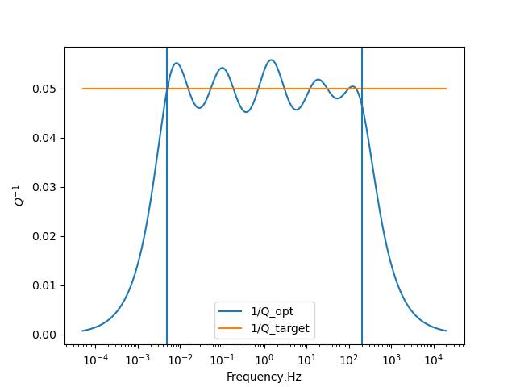

Tutorial
SpecSWD Models
SpecSWD use a mixture 1-D model (linear variation model with discontinuities). The discontinuities is marked by two group of quantities defined at the same depth. SpecSWD currently support 3 type of different models: VTI-Love wave model, VTI-Rayleigh wave model, full-anisotropic model. The format is as below:
Love wave model
In VTI media (or radial anisotropy), only 2 velocities Vsv,Vsh and corresponding quality factor Ql,Qn are related to love wave. Here is a template below:
0 1 # z rho vsh vsv QN QL
0.000000 2.800000 3.300000 3.000000 220. 200.
35.000000 2.800000 3.300000 3.000000 220. 200.
35.000000 3.200000 5.500000 5.000000 330. 300.
35 3.0 4.5 # scale factors L/density/velocity. This line can be missing
Rayleigh (Scholte) wave model
For Rayleigh wave, generally we need 3 velocities Vph,Vpv,Vsv, their corresponding quality factor Qa,Qc,Ql, and a ratio factor eta. If this model also involves acoutic regions, you should set the Vsv = 0 and Vpv=Vph, Qa=Qc in these regions to make the program know it’s acoutic. Also at elastic-acoustic boundary, a discontinuty is required.
Fully anisotropic wave model
For fully-anisotropic model, we need 21 parameters. It should be flattened like:
id = 0
for i in range(6):
for j in range(i,6):
c21_flat[id] = c66[i,j]
id += 1
The quality factors in anisotropic media is user defined. The default implementation is only focus on the isotropic part of the media, and thus requires $Q_{\kappa}$ and $Q_{\mu}$ (Carcione 1990). High-level users can go to src/shared/attenuation.cpp to define their own quality factors. If anisotropic media also includes acoustic layer, it should be set like a isotropic c21 with zero out corresponding elements.
Q model
This program use standard linear solids to model attenuation effects. The correction method (van Driel et al, 2014) make us only do one non-linear inversion to get coefficients that can be used for many Qs. The current coefficients in this program only be valid for 0.01-100 Hz (see figure below). If your application requires Q at different frequency domain, you can use scripts/attenuation.py to compute your coefficients, and paste to src/attenuation.cpp.

Q model estimated by SLS modelScale Units
This program operates in a dimensionless domain, meaning that all variables are consistently rescaled to a nondimensional form. The scale factors are established during workspace initialization. If not specified by the user, the program will automatically determine these factors based on the depth, maximum phase velocity, and density of the half-space.
Example
#!/bin/python3
import numpy as np
from specd import SpecWorkSpace
# set a model for Love wave, discontinuities is at 35 km
model = np.array([
[0.0000000, 2.800000, 3.300000, 3.000000, 220., 200.],
[35.000000, 2.800000, 3.300000, 3.000000, 220., 200.],
[35.000000, 3.200000, 5.500000, 5.000000, 330., 300.]
])
z,rho,vsh,vsv,_,_ = (model[:, i].reshape(3) for i in range(6))
# create work space
ws = SpecWorkSpace()
ws.initialize('love',z,rho,vsh=vsh,vsv=vsv,disp=True)
# compute phase velocity
c = ws.compute_egn(1.,-1,False)
print(c)